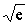
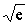
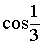
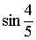
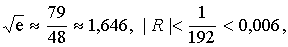
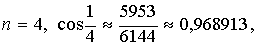
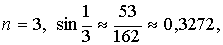

ЗАНЯТИЕ 5.7. ФОРМУЛА ТЕЙЛОРА
Контрольные вопросы
- Что называется формулой Тейлора и формулой Маклорена?
- Что называется остаточным членом формулы Тейлора?
- Какой вид имеет формула Маклорена для функции ,
,
 ?
?
Задачи
- Написать формулу Тейлора -ого порядка для функций:
1) при .
2) при .
3) при .
4) при .
5) при .
- Написать формулу Маклорена -ого порядка для функции
.
- Используя формулу Маклорена для функций ,
, , написать формулы
Маклорена для функции
1) , 2) ,
3) .
- Пользуясь приближенной формулой , найти
1) , 2)  ,
3) , 4)
, 2)  ,
3) , 4)
и
оценить погрешность.
- Какого порядка следует брать формулу Маклорена для функций ,
, чтобы вычислить
1) с точностью ,
2) с точностью ,
с точностью ,
2) с точностью ,
3)  с точностью ,
4) с точностью .
- Пользуясь приближенной формулой , найти:
1) ; 2) ;
3) и оценить погрешность.
Ответы
- 1) ;
2)
;
3)
;
4)
;
5)
;
- ;
- 1)
,
2)
,
3) ,
- 1)
2) 
3)
4)
- 1) 
2) 
3)
4) 
- 1)
2)
3)
Ответы
- 1)
 ,
,
2) ,
,
3) ,
,
4) ,
5) ,
6) ,
7) ,
,
8)  ,
,
9) ,
10) ,
11) ,
12) ,
13) ,
14) ,
15) .